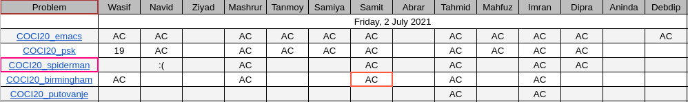

People triend to solve the following problems for ~3:30 hours, and then we discussed the solutions.

A - Emacs: Just count the following configuation in the whole grid ;)
..
.#
B - PSK: Sort the glasses by their volumes, keep filling the largest glasses, and rest of the glasses are empty.
C - Spiderman: Just modify sieve.
D - Birmingham: Mainly this problems asks you to find multi-source shortest paths. We can convert MSSP to SSSP by adding a dummy node and adding dummy edges of equal weight between the new dummy node and the given source nodes, and finally making the dummy node our new single source.
E - Putovanje: Given tree, and $m$ updates: $\texttt{update}(u, v, x)$: do $\texttt{+}x$ to all the edges on $uv$ path. Find the final value of each edge.
Split each update in two: from $u$ to lca and from $v$ to lca. Now every $uv$ are in ancestor-decendant relationship. The trick is maintain another value $s_u$ for each node $u$, which is 0 initially. Then for each update (v is decendant, u is ancestor) do $s_v \texttt{+=} x$ and $s_u \texttt{-=} x$. Finally, value of an edge $ab$ ($a$ is parent) is $\sum_{u \in \text{subtree of b}} s_u$. ;) To learn more about these tricks read the tree chapters of cses.fi/book.pdf.